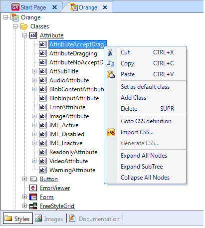
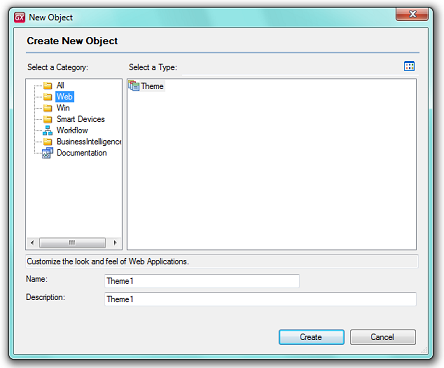
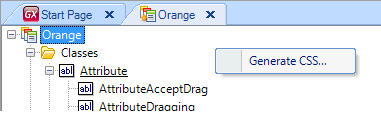

The Editor can save files with .css extensions (Cascading Style Sheets http://www.w3.org/Style/CSS/). The .css files generated by the Theme Editor inside GeneXus are called Theme Objects, which are GeneXus objects, like web panels and web transactions. There are .xml files edited within the Theme Editor; they are called "Templates." Editor options for the use of Themes and TemplatesMenu on the treeview itemsBy right-clicking on the treeview items, the following menu can be visualized: 
"New Theme" optionThrough the following dialog (by right-clicking on the Themes item into the Folder View), a new Theme can be created:  "Generate CSS..." optionA Template can be generated as a CSS. By doing this, the designer makes the modifications to the style, and the CSS can be taken directly to production. Activate this option by right-clicking on the anywhere place theme window. Then choose this option and a dialog window will be opened to finish the generation. 
|